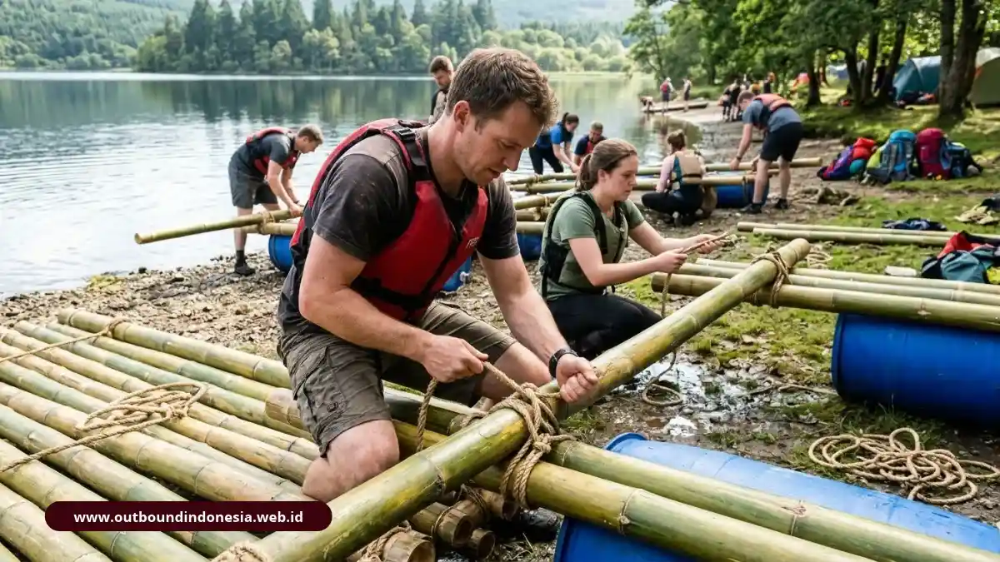

Jenis permainan outbound training terbagi menjadi aktivitas fisik, simulasi mental, permainan sosial, dan kegiatan kreatif, yang dimainkan di level low ropes, high ropes, air, maupun lapangan terbuka. Masing-masing melatih soft skill berbeda, seperti kepercayaan, komunikasi, kepemimpinan, atau keberanian.
Apa Saja Klasifikasi Utama Aktivitas Outbound Training?
Aktivitas outbound dibagi menjadi empat klasifikasi: tantangan fisik, simulasi mental dan strategi, permainan sosial, serta aktivitas kreatif dan ekspresif. Pembagian ini membantu penyusun acara menyeimbangkan beban fisik dan beban berpikir peserta.
Program yang hanya berisi tantangan fisik cenderung menyisihkan peserta yang kurang bugar, sedangkan program yang hanya berisi diskusi kehilangan unsur pengalaman langsung.
Apa Itu Aktivitas Fisik dalam Outbound?
Aktivitas fisik merupakan suatu tantangan yang memerlukan gerakan tubuh, daya tahan, dan keberanian, termasuk kegiatan seperti pendakian, peluncuran, atau penyeberangan lintasan hambatan. Tujuan utamanya melatih ketahanan emosional dan kesediaan saling membantu, bukan menguji kekuatan otot.
Apa Itu Simulasi Mental dan Pemecahan Masalah?
Simulasi mental dan pemecahan masalah adalah teka-teki kelompok yang memaksa tim merencanakan, berbagi informasi, dan mengambil keputusan dalam batasan waktu atau bahan. Jenis ini cocok bagi tim yang sering bertabrakan dalam pengambilan keputusan.
Apa Itu Permainan Sosial dan Ice Breaking?
Permainan sosial dan ice breaking adalah permainan ringan yang mencairkan suasana, mengenalkan peserta, dan menurunkan ketegangan di awal acara. Permainan ini biasanya diletakkan di awal rundown untuk membangun rasa aman sebelum tantangan yang lebih berat.
Apa Itu Aktivitas Kreatif dan Ekspresif?
Aktivitas kreatif dan ekspresif adalah tugas yang meminta tim menghasilkan karya, seperti yel-yel, poster, atau presentasi singkat, untuk melatih ide dan penyampaian pesan. Aktivitas ini menyeimbangkan program dengan ruang bagi peserta yang lebih nyaman berekspresi lewat kreativitas daripada lewat tantangan fisik.
Permainan Tradisional Apa yang Cocok sebagai Stimulus Kerja Sama Tim?
Permainan tradisional yang cocok antara lain ball tossing, balloon train, gobak sodor, ular naga, dan permainan berantai, karena sederhana, murah, dan jelas melatih kerja sama.
Sebuah kajian yang dirujuk penulis melaporkan bahwa pembelajaran berbasis pengalaman mencapai retensi kisaran 75-90 persen, jauh di atas ceramah yang berkisar 10-20 persen. Permainan sederhana pun dapat mengambil manfaat dari prinsip ini bila diikuti refleksi.
Bagaimana Cara Bermain Ball Tossing?
Ball tossing dimainkan empat sampai enam peserta yang membawa bola dengan bantuan tali dari titik awal ke titik akhir tanpa menjatuhkannya. Permainan ini melatih konsentrasi, ketenangan, dan keselarasan gerak. Satu gerakan terburu-buru dari satu anggota langsung terasa pada seluruh tim.
Bagaimana Cara Bermain Balloon Train?
Balloon train adalah permainan ketika peserta berbaris dan memindahkan bola atau balon dari depan ke belakang tanpa memakai tangan. Karena tangan tidak boleh dipakai, tim perlu bernegosiasi cara memindahkan benda. Permainan ini menguji komunikasi verbal dan nonverbal serta efisiensi kelompok.
Apa Manfaat Gobak Sodor dan Ular Naga?
Gobak sodor dan ular naga melatih penyusunan strategi bersama, komunikasi cepat, kelincahan, dan musyawarah dalam kelompok. Pada gobak sodor, tim penyerang dan penjaga di lapangan bergaris harus berbagi tugas dengan cepat. Pola ini mirip rapat singkat yang harus menghasilkan keputusan seketika.
Apa Itu Permainan Berantai dan Color Sorting?
Permainan berantai dan color sorting adalah tugas menyusun potongan gambar atau mengelompokkan benda secara berurutan, yang melatih pemecahan masalah, toleransi, dan sikap menghargai pendapat. Bentuk ini cocok bagi tim yang baru terbentuk dan masih belajar menerima gaya kerja yang berbeda.
Permainan Low Ropes dan Problem Solving Apa yang Efektif?
Low ropes dan problem solving yang efektif mencakup blind trust walk, trust fall, A-frame, bazooka, human knot, dan duct tape walk, masing-masing menargetkan kepercayaan atau koordinasi.
Bagaimana Blind Trust Walk dan Trust Fall Membangun Kepercayaan?
Blind trust walk dan trust fall membangun kepercayaan karena peserta menyerahkan keselamatannya pada instruksi atau tangkapan rekan satu tim. Dalam blind trust walk, peserta berjalan dengan mata tertutup dan hanya mengandalkan arahan rekan. Pengalaman ini membantu mengurangi rasa takut dan menumbuhkan psychological safety, yaitu rasa aman untuk mengemukakan ide tanpa takut disalahkan.
Apa Manfaat A-Frame dan Bazooka?
A-frame dan bazooka melatih delegasi, kepemimpinan, dan koordinasi presisi, karena tim harus menggerakkan atau mengoperasikan alat dengan bahan terbatas. Pada A-frame, tim menggerakkan struktur kayu berbentuk A dengan seseorang di atasnya menggunakan tali. Bazooka dan bicycle challenge menuntut perencanaan dan cara berpikir di luar kebiasaan.
Apa Manfaat Human Knot dan Duct Tape Walk?
Human knot dan duct tape walk melatih fleksibilitas dan penyelesaian masalah di bawah tekanan, karena tim harus mengurai kebuntuan tanpa melepas ikatan aturan. Permainan ini sering memunculkan pemimpin alami dan pola komunikasi yang selama ini tersembunyi.
Aktivitas High Ropes dan Adventure Apa yang Umum Dipakai?
Aktivitas high ropes dan adventure yang umum adalah flying fox, rappelling, panjat tebing, obstacle course, dan commando net, yang menantang keberanian dan ketahanan peserta.
Apa Manfaat Flying Fox, Rappelling, dan Rock Climbing?
Flying fox, rappelling, dan rock climbing membantu peserta melampaui keyakinan yang membatasi diri, menumbuhkan rasa percaya diri, dan mengasah ketahanan emosional. Aktivitas ini memicu emosi yang kuat, sehingga debriefing sangat penting. Perlengkapan pengaman, pemeriksaan peralatan, dan pendamping terlatih wajib tersedia.
Apa Manfaat Obstacle Course dan Commando Net?
Obstacle course dan commando net melatih ketahanan serta kebiasaan saling mendukung, karena lintasan rintangan lebih mudah dilewati bila anggota tim saling membantu.
Aktivitas Water-Based dan Nature Exploration Apa yang Bisa Dipilih?
Kegiatan yang berorientasi pada lingkungan akuatik dan alam sekitar mencakup pembangunan rakit, penjelajahan sungai dengan arus deras, serta penyeberangan sungai, yang semuanya menekankan pentingnya perencanaan strategis dan pengambilan keputusan yang gesit.
Bagaimana Raft Building Melatih Manajemen Sumber Daya?
Pembangunan rakit merupakan latihan manajemen sumber daya yang efektif, mengingat tim diwajibkan untuk merangkai rakit menggunakan material yang terbatas seperti bambu, tali, dan drum, kemudian memvalidasinya melalui pengujian di perairan.

Tim merakit rakit bambu pada kegiatan outbound berbasis air untuk melatih koordinasi dan strategiPermainan ini menampilkan perencanaan, pembagian peran, dan adaptasi sekaligus. Bila rancangan gagal, tim terpaksa memperbaikinya secara cepat.
Apa Manfaat White Water Rafting dan River Crossing?
White water rafting dan river crossing melatih manajemen risiko dan pengambilan keputusan cepat, karena kondisi air menuntut komando yang jelas dan kekompakan. Aktivitas ini memerlukan pemandu berpengalaman, pelampung, dan pemeriksaan kondisi cuaca serta debit air sebelum dimulai. Peserta yang tidak bisa berenang perlu mendapat peran alternatif yang aman.
Bagaimana Memilih Kombinasi Permainan Sesuai Tujuan Tim?
Pilih kombinasi permainan dengan memetakan tujuan tim terlebih dahulu, lalu menyusun urutan dari ice breaking, tantangan kerja sama, hingga tantangan berat dan refleksi.
Panduan Memilih Kombinasi Sesuai Kebutuhan:
- Tim baru dan kaku: Awali dengan ice breaking, permainan tradisional, lalu lanjutkan ke low ropes ringan.
- Masalah komunikasi: Gunakan balloon train, human knot, dan simulasi pemecahan masalah berantai.
- Kepemimpinan lemah: Terapkan A-frame, bazooka, dan simulasi pembuatan rakit (raft building).
- Rasa percaya diri rendah: Berikan tantangan high ropes dan rock climbing dengan pendampingan instruktur.
- Kepercayaan antaranggota: Fokuskan pada aktivitas blind trust walk dan trust fall.
Pilih aktivitas dengan mempertimbangkan keselamatan, kondisi fisik peserta, dan fasilitas lokasi. Pembahasan standar keselamatan dan cara memilih vendor tersedia di artikel perencanaan.
Gambaran menyeluruh tentang metode ini ada di panduan utama outbound training.
Kesimpulan Praktis
Permainan outbound bekerja paling baik bila dipilih sesuai tujuan tim dan ditutup dengan refleksi mendalam.
- Gunakan permainan tradisional bila anggaran terbatas namun ingin dampak kolaboratif maksimal.
- Terapkan low ropes untuk memupuk kepercayaan dan high ropes untuk melatih keberanian.
- Pakai raft building untuk menguji strategi dan pembagian peran di situasi nyata.
- Selalu sediakan peran alternatif bagi peserta tertentu dan utamakan prosedur keselamatan.

Tim Outbound Indonesia
Tim fasilitator berpengalaman dan praktisi experiential learning profesional. Berdedikasi membagikan wawasan keselamatan, dinamika tim, dan pengembangan kepemimpinan di alam bebas.